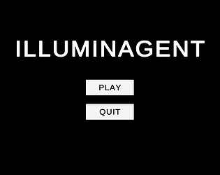
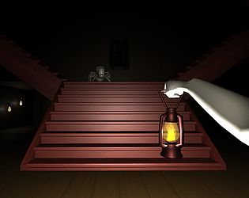
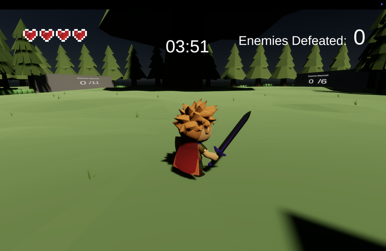
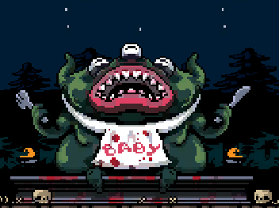

Insomnia
A first-person horror game I built in Unity (C#) over a year and 36 releases. I wrote the enemy AI, a reusable event system, and the sleep mechanic the whole game runs on. Best played with headphones.

An Indie Game Developer that works in game engines such as Unity and Unreal Engine.
Experienced in C# and C++.
A first-person horror game I built in Unity (C#) over a year and 36 releases. I wrote the enemy AI, a reusable event system, and the sleep mechanic the whole game runs on. Best played with headphones.

A romance visual novel I was the lead programmer on, made for the Sealed With a Kiss game jam in Ren'Py. I built the branching choice system, the name input, and wired the team's writing and art into a playable game.
A horror visual novel made for a game jam that plays out on a simulated computer desktop. I was the main programmer, and built the desktop and browser it runs on.

A wacky western visual novel my team developed for a game jam. I was one of the programmers and built the inventory system. Welcome to the Wild East!

A short Game Boy horror game I built in GB Studio, where a boy just wants to watch TV but each day gets a little stranger. I even ran it as a real ROM on my 3DS.

A retro space-themed shooter game developed in Unity for a game jam. Features an endless wave system that ensures a challenging experience.

A short visual novel I developed in Ren'py for a school project showcasing why kids should learn game development.

A team game jam game where you bring light to a dark, enemy-filled world. I built the enemy AI, and we ranked #51 in the jam.

A game I helped develop in Unity for a game jam where the theme was deception.
A small game I made for a game jam using Unreal Engine. Cross the bridge without getting spotted by the lights!

A stealth platformer my college team built in Unreal Engine 4. I worked in C++ on the camera, the player controls, and the animations, and helped with the sight-and-sound enemy AI.

A solo action jam game where dodging at the last second slows time to a crawl. I built the "witch time" dodge and the time-manipulation system in Unity.

My first college team game, an endless wave shooter in Unity. I built the UI and game manager, and composed all the music and audio from scratch.

A dark 2D platformer where you feed villagers to a hungry god, made by a team for a "sacrifice" jam. I was the sole programmer and built every system in it.

A top down 2D game I created for a game jam. Find all the bottles in the map while avoiding enemies and currents!

A Pokémon-style RPG I built solo in Unity as a passion project, data-driven creatures, a turn-based battle system, and a full type-effectiveness chart.

A mouse-only bullet hell I built solo in Unity for a college project, your character follows the cursor and clicks to shoot through waves of enemies.